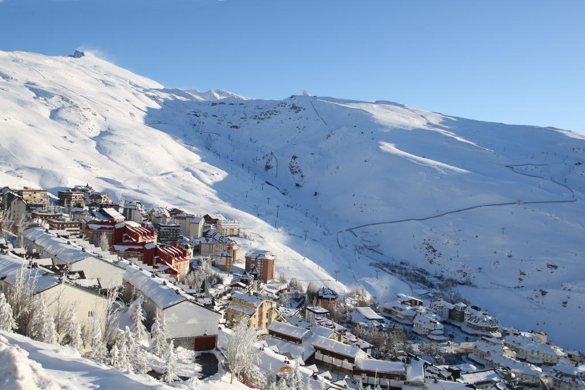

Sierra Nevada
ACTIVIDADES TODO EL AÑO EN NUESTRO PARAÍSO INVERNAL Sierra Nevada no es solo un destino invernal; es un paraíso de aventuras durante todo el año. Cada estación revela un nuevo mundo de posibilidades para quienes buscan emociones y experiencias únicas. Actividades todo el año en nuestro paraíso invernal En invierno, las pistas de esquí y snowboard son las reinas, ofreciendo desafíos tanto para principiantes como para expertos. Los amantes del paisaje nevado también pueden sumergirse en rutas de raquetas de nieve o accesos con nuestros telecabinas a las actividades de la zona de Borreguiles. A medida que la nieve se derrite, Sierra Nevada florece en primavera y verano, presentando un escenario ideal para el senderismo, el ciclismo de montaña y la escalada. Los senderos te llevan a través de paisajes alpinos, lagunas escondidas y miradores panorámicos. Y no olvidemos el otoño, con sus tonos dorados y rojizos, perfecto para las caminatas tranquilas y la fotografía de paisajes. Haz click en el enlace y descubre todo lo que Sierra Nevada tiene para ofrecerte. Cada visita es una nueva aventura esperando ser vivida.
